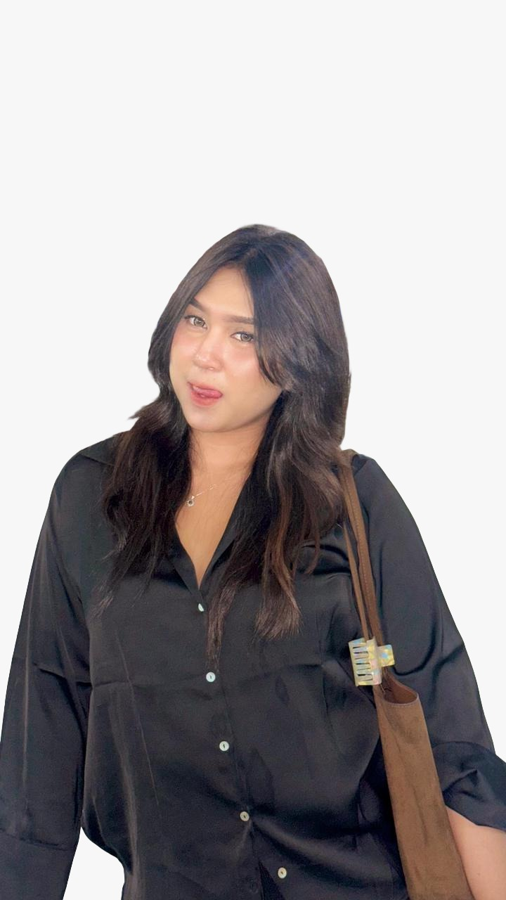
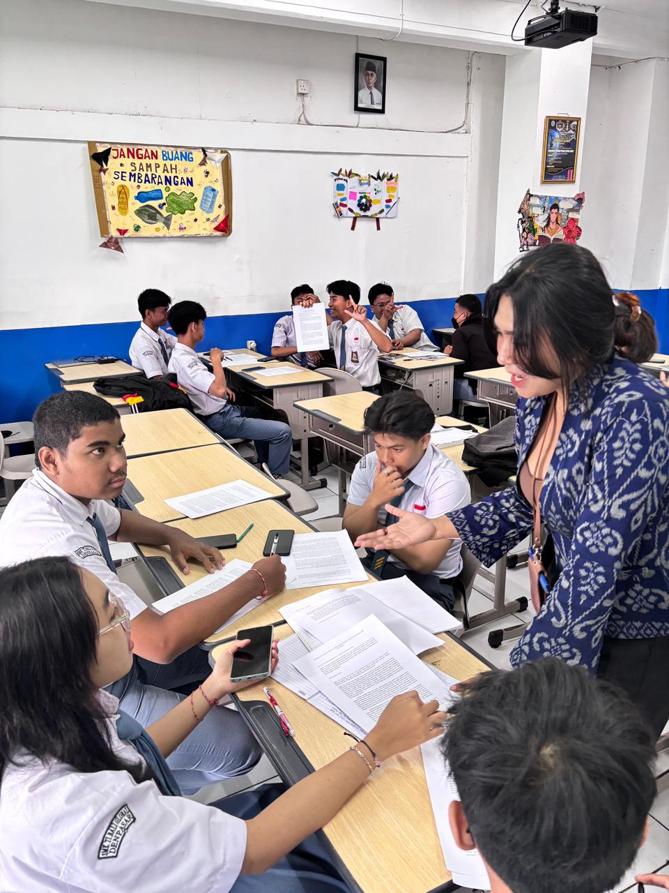
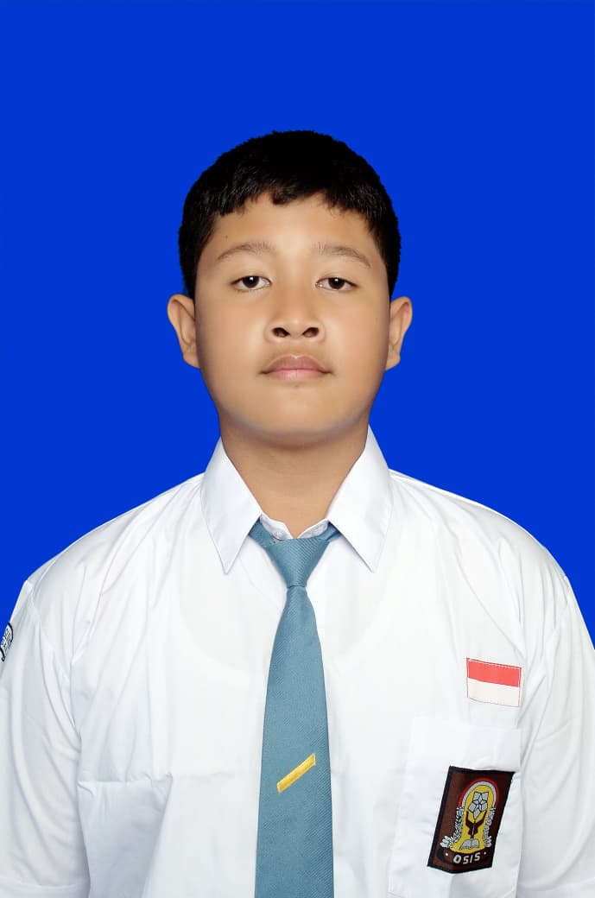
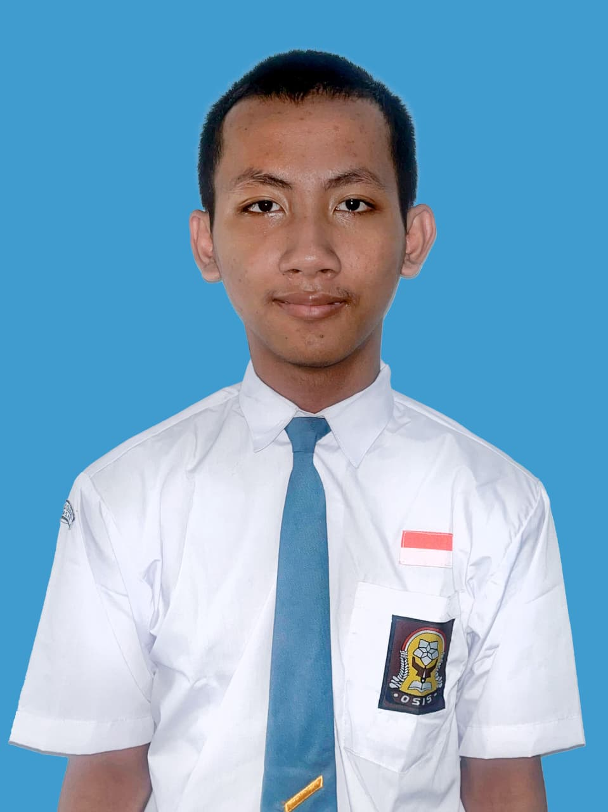
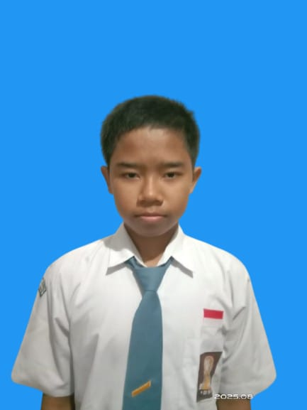
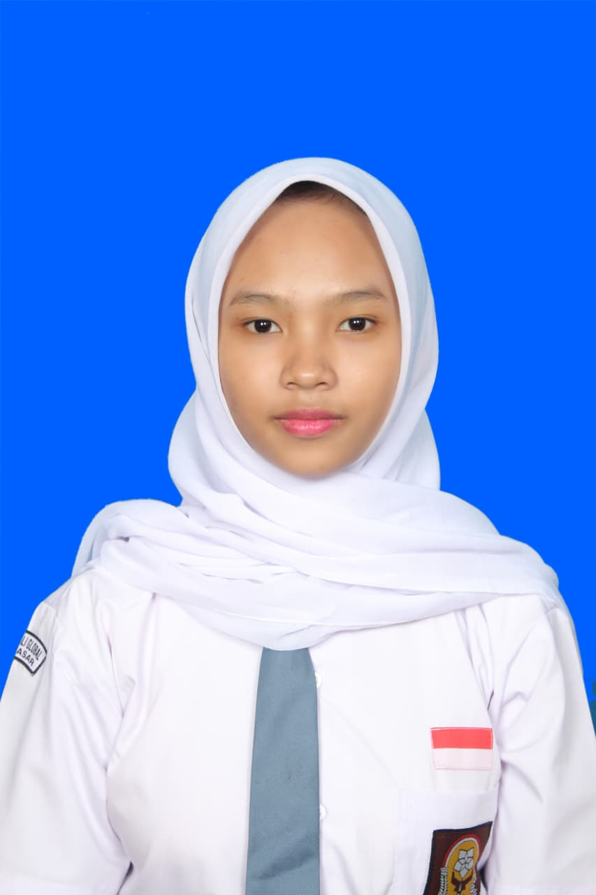

Mendedikasikan diri untuk melestarikan budaya dan bahasa melalui pendidikan yang kreatif dan berkarakter.
Kenali Lebih Jauh

Perjalanan saya di dunia pendidikan dimulai pada tahun 2020. Awalnya, menjadi guru adalah sebuah percobaan yang tidak direncanakan, namun seiring berjalannya waktu, saya menemukan kebahagiaan saat melihat siswa mulai memahami materi dan tumbuh rasa percaya dirinya. Sebagai pengajar Bahasa Bali, saya berkomitmen untuk menjaga warisan budaya melalui cara yang menyenangkan.
Pendidikan Dasar Pertama
Pendidikan Menengah Pertama
Pendidikan Menengah Atas
UHN I Gusti Bagus Sugriwa (Gelar S.Pd)
Mulai aktif mengajar dan berinteraksi dengan dunia pendidikan formal.
Mengaktifkan kelas yang pasif menjadi antusias dalam belajar Bahasa Bali.
Menerapkan pujian seperti "Wah pintar!" untuk membangun kepercayaan diri siswa.
Memahami berbagai karakter unik dan kecepatan belajar siswa yang beragam.
— Ni Wayan Lina Valentine, S.Pd

Web Developer.

Web Hosting.

Pencatat Hasil Wawancara.

Pewawancara Guru.